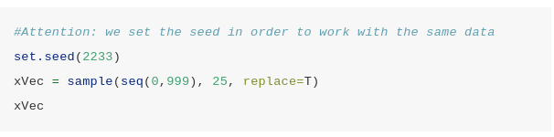
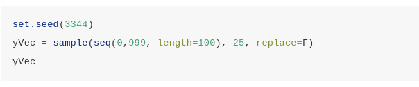
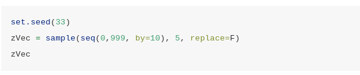
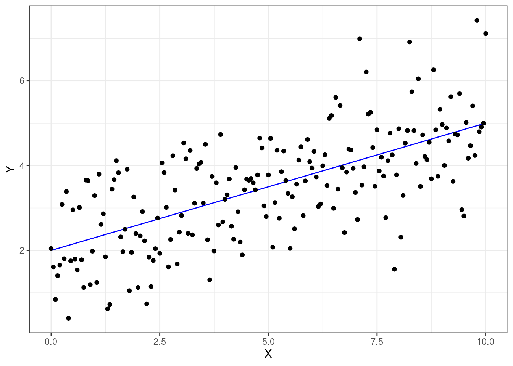

Lab 1 Comandos básicos para programação com R
1.1 Laboratório de Exercícios 1
1.1.1 Exercício 1
Calcule \(exp\left(3 - \dfrac{4}{5}\right) + \dfrac{\sqrt{3 + 2^5}}{4 - 7 \cdot \log{(10)}}\).
Resp.:
exp(3 - 4/5) + (sqrt(3 + 2^5))/(4 - 7 * log(10))## [1] 8.536811Crie o vetor chamado
xque contém os seguintes valores \(\left(10, \log{(0,2)}, 6/7, \sqrt{54}, -0,124\right)\).
Encontre o comprimento de
x.Quais elementos de
xestão entre 0 (incluído) e 1 (excluído)? Calcule também a contagem absoluta correspondente e a frequência relativa (proporções)?Quais elementos de
xsão negativos? Substitua-os pelo mesmo número em valor absoluto.Extraia de
xo 2º e o 4º valor e salve-os em um novo vetor chamadoy. Calcule \(y + \sqrt{(\exp{(-0,4)})}\).Resp.:
x <- c(10, log(0.2), 6/7, sqrt(54), -0.124) x## [1] 10.0000000 -1.6094379 0.8571429 7.3484692 -0.1240000O comprimento do vetor
xé igual a 5.Elementos de
xque estão entre 0 (incluído) e 1 (excluído).x1 <- x[(x >=0) & (x < 1)] x1## [1] 0.8571429n1 <- length(x1) n <- length(x) p <- n1/nExiste 1 elemento satisfazendo essa condição, o que corresponde a 20% do total de elementos do conjunto
x.Elementos negativos de
x.x[x<0]## [1] -1.609438 -0.124000As posições dos elementos negativos de
xsão:negative_index <- which(x %in% x[x<0]) negative_index## [1] 2 5Substituição dos elementos negativos pelos respectivos valores absolutos.
x[negative_index] <- abs(x[negative_index]) x## [1] 10.0000000 1.6094379 0.8571429 7.3484692 0.1240000Segunto e quarto elementos de
xy <- x[c(2, 4)] y## [1] 1.609438 7.348469y + sqrt(exp(-0.4))## [1] 2.428169 8.167200
1.1.2 Exercício 2
Leia as páginas de ajuda das funções
sampleeseq.Execute as seguintes linhas de código e tente entender o que está acontecendo.

Resp.:
set.seed(2233)
xVec <- sample(seq(0, 999), 25, replace = TRUE)
xVec## [1] 513 773 693 506 706 208 111 713 816 773 465 661 561 883 871 158 498 91 95
## [20] 94 685 564 833 746 425 Resp.:
set.seed(3344)
yVec <- sample(seq(0,999, length = 100), 25, replace = FALSE)
yVec## [1] 908.18182 888.00000 999.00000 40.36364 433.90909 938.45455 615.54545
## [8] 898.09091 363.27273 817.36364 736.63636 494.45455 242.18182 948.54545
## [15] 302.72727 181.63636 807.27273 555.00000 353.18182 464.18182 797.18182
## [22] 222.00000 766.90909 988.90909 696.27273
Resp.:
set.seed(33)
zVec <- sample(seq(0, 999, by=10), 5, replace = FALSE)
zVec## [1] 410 70 850 590 80- Calcule algumas estatísticas resumidas para os três vetores.
Resp.:
estatisticas <- function(x){
return(
list(
"length"=length(x),
"mean"=mean(x),
"median"=median(x),
"sd"=sd(x)
)
)
}estatisticas(xVec)## $length
## [1] 25
##
## $mean
## [1] 537.68
##
## $median
## [1] 564
##
## $sd
## [1] 267.6224estatisticas(yVec)## $length
## [1] 25
##
## $mean
## [1] 618.3709
##
## $median
## [1] 696.2727
##
## $sd
## [1] 289.6566estatisticas(xVec)## $length
## [1] 25
##
## $mean
## [1] 537.68
##
## $median
## [1] 564
##
## $sd
## [1] 267.6224- Selecione os valores em
yVecmaiores que 600.
Resp.:
yVec[yVec > 600]## [1] 908.1818 888.0000 999.0000 938.4545 615.5455 898.0909 817.3636 736.6364
## [9] 948.5455 807.2727 797.1818 766.9091 988.9091 696.2727- Selecione os valores em
yVecque estão entre 600 e 800 e salve-os em um novo valore chamadoyVec_sel1. Escolha os valores emyVecmaiores que 600 ou menores que 800 e salve-os em um novo vetor chamadoyVec_sel2. Qual é o comprimento deyVec_sel1eyVec_sel2?
Resp.:
yVec_sel1 <- yVec[(yVec > 600) & (yVec < 800)]
yVec_sel1## [1] 615.5455 736.6364 797.1818 766.9091 696.2727yVec_sel2 <- yVec[(yVec > 600) | (yVec < 800)]
yVec_sel2## [1] 908.18182 888.00000 999.00000 40.36364 433.90909 938.45455 615.54545
## [8] 898.09091 363.27273 817.36364 736.63636 494.45455 242.18182 948.54545
## [15] 302.72727 181.63636 807.27273 555.00000 353.18182 464.18182 797.18182
## [22] 222.00000 766.90909 988.90909 696.27273length(yVec_sel1)## [1] 5length(yVec_sel2)## [1] 25- Quais são os valores em
xVecque correspondem aos valores emyVecque são maiores que 600? (Por correspondência, dizemos que eles têm as mesmas posições).
Resp.:
xVec[which(yVec > 600)]## [1] 513 773 693 208 111 713 773 465 883 498 685 833 746 425- Calcule a soma e a diferença dos 5 primeiros elementos dos 2 vetores. Dica: para indexar os 5 primeiros elementos, use
1:5.
Resp.:
xVec[1:5] + yVec[1:5]## [1] 1421.1818 1661.0000 1692.0000 546.3636 1139.9091xVec[1:5] - yVec[1:5]## [1] -395.1818 -115.0000 -306.0000 465.6364 272.0909- Para
xVeccalcule a seguinte fórmula \(\dfrac{\sum_ {i = 1}^n \left(x_i - \bar{x}\right)^2}{n}\), onde \(n\) é o comprimento do vetor e \(\bar{x}\) é a média do vetor. O resultado é igual ao obtido comvar? Por quê?
Resp.:
xVar <- sum((xVec - mean(xVec))^2)/length(xVec)
xVar## [1] 68756.86xVar2 <- var(xVec)
xVar2## [1] 71621.73A fórmula dada no enunciado do problema calcula a variância populacional enquanto a função var do base R calcula a variância amostral. A diferença entre as duas expressões é que para a variáncia amostral o denominador da fração é igual a \(n - 1\) e não \(n\).
- Para
xVeccalcule a seguinte fórmula \(\dfrac{\sum_{i=1}^n |x_i - Me| }{n}\), onde \(n\) é o comprimento do vetor e \(Me\) é a mediana do vetor.
Resp.:
sum(abs(xVec - median(xVec)))/length(xVec)## [1] 217.121.1.3 Exercício 3
Considere o seguinte modelo \[Y = \beta_0 + \beta_1 X + \varepsilon\]
onde \(\beta_0 = 2\), \(\beta_1 = 0,3\) e \(\varepsilon\) é uma distribuição normal com média 0 e variância 1.
- Considerando uma sequência de valores para \(X\) entre 0 e 10, simule 200 valores para \(Y\).
Resp.:
beta_0 <- 2
beta_1 <- 0.3
X <- seq(from=0, to=10, length=201)
eps <- rnorm(201, mean = 0, sd = 1)
Y <- beta_0 + beta_1 * X- Traçar os valores simulados.
Resp.:
df <- data.frame(X, Y, eps)
df %>%
ggplot() +
geom_line(aes(x=X, y=Y), colour="blue")+
geom_point(aes(x=X, y=Y+eps)) +
theme_bw()